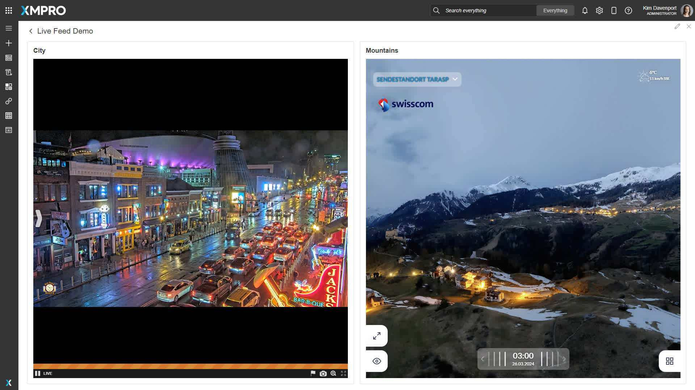

Live Feed
The Live Feed Block is a dynamic visualization block that allows users to incorporate their own IP Live Feed camera into an application. This block provides real-time visual insights directly within the app interface.
By integrating a live feed, users can monitor events as they unfold in real-time. When used in conjunction with other blocks within App Designer, it allows users to not only view real-time events but also to monitor and visualize key statistics related to the area under surveillance. This combination of live visuals and data-driven insights provides a comprehensive overview of the situation, enabling users to respond more effectively to changing conditions.
Note
The controls at runtime will depend on the camera software used.

Live Feed Properties
Appearance
Common Properties
The visibility property is common to most Blocks;
See the Common Properties article for more details on common appearance properties.
Behavior
Live Feed URL
Enter the URL of the IP live camera. The contents of the feed will load automatically from this URL.
Note
The live feed will be streamed on the canvas once the URL has been provided.
Enable Scrollbars
The live video feed is confined by the block's dimensions on the canvas. Enabling the "Enable Scrollbars" option removes these limitations, displaying the video feed at its original size.
If the native size exceeds the block dimensions, users can use scroll bars to help navigate.
Last modified: September 16, 2025